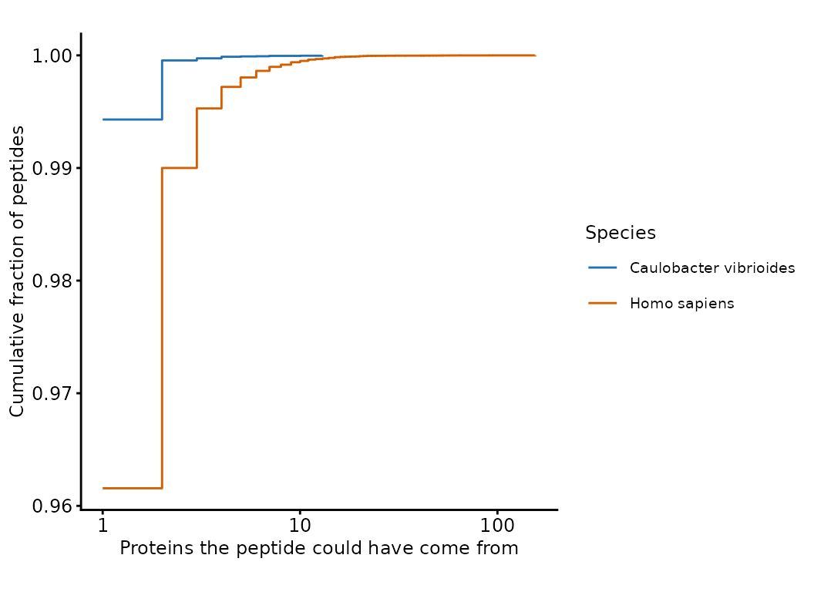

Pitfall: peptides are not proteins
Tom Smith
2026-09-11
Source:vignettes/gotcha_peptide_to_protein.Rmd
gotcha_peptide_to_protein.RmdBottom-up proteomics measures peptides. Every protein-level number in every other vignette rests on an inference step that turns those peptides into proteins, and that step is normally invisible: the search engine has already made its decisions by the time you read the file, and it reports them as a single accession per row.
Most of the time this does not matter. This article is about the times it does, and about how to tell which case you are in.
How often could a peptide have come from more than one protein?
This is answerable without any experimental data at all: digest a
whole proteome in silico and count. cleaver does the
digestion, and the Caulobacter vibrioides reference proteome is
small enough to ship with the package and digest here.
Peptides shorter than 6 or longer than 30 residues are rarely identified, so counting them would overstate how much of the proteome is really at stake.
cvib_fasta <- system.file("extdata", "C_vibrioides_proteome.fasta.gz",
package = "biomasslmb")
proteome <- Biostrings::readAAStringSet(cvib_fasta)
names(proteome) <- gsub('(sp|tr)\\|(\\S*)\\|.*', '\\2', names(proteome))
peptides <- cleaver::cleave(proteome, enzym = "trypsin", unique = FALSE)
pep2prot <- data.frame(
protein = rep(names(peptides), lengths(peptides)),
peptide = unlist(peptides, use.names = FALSE)) %>%
filter(nchar(peptide) >= 6, nchar(peptide) <= 30) %>%
distinct()
per_peptide <- count(pep2prot, peptide, name = 'n_proteins')
c(proteins = length(proteome),
peptides = nrow(per_peptide),
shared = sum(per_peptide$n_proteins > 1))
#> proteins peptides shared
#> 3859 64436 367The same calculation on the human reference proteome takes a 7.4 MB
FASTA and rather longer, so it is precomputed and cached with the
package. Both entries were produced by the code above; see
data-raw/record_peptide_uniqueness.R.
peptide_uniqueness <- readRDS(system.file(
"extdata", "peptide_uniqueness.rds", package = "biomasslmb"))
sapply(peptide_uniqueness, function(res) {
c(proteins = res$n_proteins,
peptides = sum(res$peptides$n_peptides),
percent_shared = round(
100 * sum(res$peptides$n_peptides[res$peptides$n_proteins > 1]) /
sum(res$peptides$n_peptides), 2),
most_proteins_one_peptide_maps_to = max(res$peptides$n_proteins))
})
#> Homo sapiens Caulobacter vibrioides
#> proteins 20647.00 3859.00
#> peptides 548569.00 64436.00
#> percent_shared 3.84 0.57
#> most_proteins_one_peptide_maps_to 156.00 13.00Two things are worth taking from this. Shared peptides are a minority in both proteomes — the overwhelming majority of tryptic peptides identify exactly one protein, and the inference step is doing nothing controversial for them. And the human proteome is roughly seven times worse than the bacterial one, with a worst case of a peptide that could have come from any of 156 proteins.
The size of the proteome is not the whole story. A large proteome has more proteins for a peptide to collide with by chance, but the dominant cause is gene duplication: paralogue families, and the isoforms of a single gene, differ over part of their sequence and are identical over the rest. A bacterium with few paralogues barely has the problem.
bind_rows(lapply(peptide_uniqueness, `[[`, 'peptides'), .id = 'Species') %>%
group_by(Species) %>%
arrange(n_proteins) %>%
mutate(cumulative = cumsum(n_peptides) / sum(n_peptides)) %>%
ggplot(aes(n_proteins, cumulative, colour = Species)) +
geom_step() +
scale_x_log10() +
scale_colour_manual(values = get_cat_palette(2)) +
theme_biomasslmb(base_size = 9) +
labs(x = 'Proteins the peptide could have come from',
y = 'Cumulative fraction of peptides')
Cumulative distribution of the number of proteins a tryptic peptide could have originated from.
Which proteins pay for it
An average over peptides hides the thing that matters. Sharing is not spread evenly: it is concentrated on the members of paralogue families, and for those proteins it can account for most or all of their peptides.
sapply(peptide_uniqueness, function(res) {
p <- res$proteins
c(`no unique peptide at all` = sum(p$n_unique == 0),
`fewer than 2 unique peptides` = sum(p$n_unique < 2),
`under half of peptides unique` = sum(p$perc_unique < 50),
`percent of proteome affected` = round(100 * mean(p$perc_unique < 50), 1))
})
#> Homo sapiens Caulobacter vibrioides
#> no unique peptide at all 376.0 0.0
#> fewer than 2 unique peptides 809.0 43.0
#> under half of peptides unique 1517.0 23.0
#> percent of proteome affected 7.4 0.6376 human proteins have no unique tryptic peptide whatsoever. No amount of instrument time will identify them unambiguously; whatever a search engine reports for them is an assignment rule, not a measurement. In C. vibrioides there are none.
This is why the median tells you nothing useful here: half of the proteins in both proteomes have every one of their peptides to themselves, and the interesting population is entirely in the tail.
What the search engine does about it
Faced with a peptide that maps to several proteins, a search engine nominates the protein it holds responsible for it. Proteome Discoverer reports a master protein and MaxQuant a razor protein; both are, roughly, the protein with the most evidence among the candidates, on the reasoning that if a protein is definitely present it is the most parsimonious explanation for its shared peptides too. The two columns are not equivalent, and the difference between them matters as soon as you try to compare them.
The two export formats record the ambiguity differently, and both keep enough to recover it.
pd_peptides <- read.delim(system.file(
"extdata", "lfq_dda_pd_PeptideGroups.txt", package = "biomasslmb"))
mq_peptides <- read.delim(gzfile(system.file(
"extdata", "lfq_dda_mq_peptides.txt.gz", package = "biomasslmb")))
# PD counts the candidate proteins; MaxQuant flags whether there was only one
table(`PD: proteins per peptide` = pmin(pd_peptides$Number.of.Proteins, 5))
#> PD: proteins per peptide
#> 1 2 3 4 5
#> 3102 226 84 33 99
table(`MaxQuant: peptide unique to its protein` = mq_peptides$Unique..Proteins.)
#> MaxQuant: peptide unique to its protein
#> no yes
#> 602 1846Every filter_features_*() function takes
proteotypic, which drops these rows using whichever column
the search engine provides: Number.of.Proteins for PD,
Unique..Proteins. for MaxQuant, Proteotypic
for DIA-NN and PEP.IsProteotypic for Spectronaut. It is a
separate question from unique_master, which asks only
whether the search engine resolved the feature to a single protein
identity: a peptide can have an unambiguous master protein and still be
shared with the other proteins inside that protein group. Filtering on
either is the conservative choice, but it is a choice: it discards real
measurements, and it discards them preferentially from exactly the
proteins that had least unique evidence to begin with.
Comparing the two assignments
These two files are the same six acquisitions processed two ways (see comparing processing pipelines), so for peptides identified by both we can ask whether they were assigned to the same protein.
The two columns have to be compared with their definitions in mind,
because they do not report the same thing.
Master.Protein.Accessions names the master protein of every
protein group the peptide was assigned to, so where the evidence does
not separate two groups it lists both masters, and
Number.of.Protein.Groups counts them.
Leading.razor.protein names one protein and only ever one,
because MaxQuant assigns each peptide to the razor protein of a single
group whether or not the evidence supports singling that protein out.
Proteome Discoverer can decline to resolve a peptide to one identity;
MaxQuant’s column has no way to express that.
Comparing the two fields as strings would therefore score every unresolved PD assignment as a disagreement. The question that means something is whether MaxQuant’s razor protein is among the proteins PD named.
pd_peptides$Sequence <- toupper(pd_peptides$Sequence)
mq_peptides$Sequence <- toupper(mq_peptides$Sequence)
assignments <- merge(
pd_peptides[, c('Sequence', 'Master.Protein.Accessions',
'Number.of.Proteins', 'Contaminant')],
mq_peptides[, c('Sequence', 'Leading.razor.protein',
'Potential.contaminant')],
by = 'Sequence') %>%
# the two pipelines were searched against different contaminant databases,
# which use different accession prefixes, so contaminants would register as
# disagreements for a reason that has nothing to do with protein inference
filter(Contaminant != 'True', Potential.contaminant != '+',
!grepl('Cont_|CON__', Master.Protein.Accessions)) %>%
mutate(masters = strsplit(Master.Protein.Accessions, '; '),
n_masters = lengths(masters),
razor_is_a_master = mapply(is.element, Leading.razor.protein, masters),
shared = Number.of.Proteins > 1)
with(assignments[assignments$shared, ],
table(proteins_PD_named = n_masters, razor_is_one_of_them = razor_is_a_master))
#> razor_is_one_of_them
#> proteins_PD_named FALSE TRUE
#> 1 0 35
#> 2 1 46
#> 3 1 4Of the 87 shared peptides, 35 were resolved by PD to a single master protein, and MaxQuant’s razor protein is that same protein in every one of them: there is no peptide here where the two engines each committed to an identity and committed to different ones. The remaining 52 are peptides PD assigned to more than one protein group, and in 50 of those the razor protein is one of the group masters PD listed. Read as strings, those 50 peptides look like disagreements but they are not. They are one engine reporting a choice the other declined to make.
That leaves 2 peptides where the protein assignment truely differs.
assignments %>%
filter(shared, !razor_is_a_master) %>%
select(Sequence, Master.Protein.Accessions, Leading.razor.protein,
Number.of.Proteins)
#> Sequence Master.Protein.Accessions Leading.razor.protein
#> 1 LLLPGELAKHAVSEGTK Q16778; O60814; Q8N257 Q99880
#> 2 VTIAQGGVLPNIQAVLLPK P04908; P0C0S8 Q99878
#> Number.of.Proteins
#> 1 16
#> 2 10Both are histone peptides, one matching 16 candidate proteins and the other 10 candidates, and in each case every accession named by either engine is a member of the same histone family. Here the two engines did reach incompatible answers from the same spectra. That is the shape of the problem when it is real: not scattered through the data, but concentrated in the largest families of near-identical paralogues, where the candidates are numerous enough and similar enough that any choice between them is close to arbitrary. A quantitative difference reported for one member of such a family may be a real difference in that protein, or it may be a neighbour’s signal arriving under a different name because a different pipeline was used.
The more common hazard is the 52 peptides PD did not resolve to a
single group. Those are exactly what unique_master removes,
and they are invisible in MaxQuant output — not because MaxQuant
resolved them, but because its format cannot record that they were
unresolved.
When the assumption breaks completely
Everything above assumes the search database is a reference proteome: one entry per protein, curated, with isoforms either collapsed or explicitly listed. Two situations break that assumption badly enough that the protein-level output should not be trusted at all without further work.
- Metagenome assemblies. When the database is predicted open reading frames from an assembly, the entries are contigs rather than proteins. The same real protein is frequently split across several contigs, or present on several contigs from related organisms in the sample, so a peptide maps to many “proteins” that are not distinct proteins at all. Peptide sharing is then not a property of biology but of the assembly, and it changes if the assembly is rerun. In this situation, quantifying at peptide level and grouping afterwards is more defensible than accepting the search engine’s protein inference.
- Isoform-level databases. Including every UniProt isoform makes the sharing problem far worse, since isoforms of one gene are identical over most of their length. Unless the experiment is specifically about isoforms — and can identify them from isoform-specific peptides, which needs checking rather than assuming — a canonical-sequence database gives a protein-level result that means what you think it means.
Summary
- The overwhelming majority of tryptic peptides map to exactly one protein, so protein inference is uncontroversial for most of the proteome and this is not a reason to distrust proteomics generally.
- The exceptions are concentrated, not scattered. In the human proteome around 7% of proteins have under half their peptides to themselves, and 376 have none at all. In a small bacterial proteome the problem is close to absent.
- Master and razor protein assignments are inferences, not measurements, and the two search engines record them differently: PD names one protein per protein group and may name several, MaxQuant always names exactly one. Compared on that basis they are compatible on 85 of the 87 shared peptides above, with the 2 genuine disagreements both falling inside a histone family.
- Before believing a protein-level result, check whether that protein
had unique peptides —
Number.of.Proteinsin a PD export,Unique..Proteins.in MaxQuant — and be especially careful with members of paralogue families and with any result that distinguishes between two closely related proteins.
The QC vignettes for each acquisition type show where this filtering belongs in a pipeline: TMT, LFQ-DDA and LFQ-DIA.
Getting help
If your experiment does not fit what this article assumes, or a result looks wrong, please get in touch with Tom Smith (tsmith@mrclmb.ac.uk) rather than guessing — it is far easier to help while an analysis is in progress than to unpick a decision afterwards, and easier still before the samples are run. Getting started sets out which article applies to which experiment.
sessionInfo()
#> R version 4.5.3 (2026-03-11)
#> Platform: x86_64-pc-linux-gnu
#> Running under: Ubuntu 24.04.5 LTS
#>
#> Matrix products: default
#> BLAS: /usr/lib/x86_64-linux-gnu/openblas-pthread/libblas.so.3
#> LAPACK: /usr/lib/x86_64-linux-gnu/openblas-pthread/libopenblasp-r0.3.26.so; LAPACK version 3.12.0
#>
#> locale:
#> [1] LC_CTYPE=C.UTF-8 LC_NUMERIC=C LC_TIME=C.UTF-8
#> [4] LC_COLLATE=C.UTF-8 LC_MONETARY=C.UTF-8 LC_MESSAGES=C.UTF-8
#> [7] LC_PAPER=C.UTF-8 LC_NAME=C LC_ADDRESS=C
#> [10] LC_TELEPHONE=C LC_MEASUREMENT=C.UTF-8 LC_IDENTIFICATION=C
#>
#> time zone: UTC
#> tzcode source: system (glibc)
#>
#> attached base packages:
#> [1] stats graphics grDevices utils datasets methods base
#>
#> other attached packages:
#> [1] dplyr_1.2.1 tidyr_1.3.2 ggplot2_4.0.3 biomasslmb_0.1.0
#>
#> loaded via a namespace (and not attached):
#> [1] tidyselect_1.2.1 farver_2.1.2
#> [3] blob_1.3.0 Biostrings_2.78.0
#> [5] S7_0.2.2 fastmap_1.2.0
#> [7] lazyeval_0.2.3 XML_3.99-0.24
#> [9] digest_0.6.39 lifecycle_1.0.5
#> [11] cluster_2.1.8.2 ProtGenerics_1.42.0
#> [13] survival_3.8-6 KEGGREST_1.50.0
#> [15] RSQLite_3.53.3 magrittr_2.0.5
#> [17] genefilter_1.92.0 compiler_4.5.3
#> [19] rlang_1.3.0 sass_0.4.10
#> [21] tools_4.5.3 igraph_2.3.3
#> [23] yaml_2.3.12 corrplot_0.95
#> [25] knitr_1.52 labeling_0.4.3
#> [27] S4Arrays_1.10.1 htmlwidgets_1.6.4
#> [29] bit_4.6.0 DelayedArray_0.36.1
#> [31] plyr_1.8.9 RColorBrewer_1.1-3
#> [33] abind_1.4-8 withr_3.0.3
#> [35] purrr_1.2.2 BiocGenerics_0.56.0
#> [37] desc_1.4.3 grid_4.5.3
#> [39] stats4_4.5.3 xtable_1.8-8
#> [41] scales_1.4.0 MASS_7.3-65
#> [43] MultiAssayExperiment_1.36.2 SummarizedExperiment_1.40.0
#> [45] cli_3.6.6 rmarkdown_2.32
#> [47] crayon_1.5.3 ragg_1.5.2
#> [49] generics_0.1.4 otel_0.2.0
#> [51] robustbase_0.99-7 httr_1.4.9
#> [53] reshape2_1.4.5 BiocBaseUtils_1.12.0
#> [55] DBI_1.3.0 cachem_1.1.0
#> [57] stringr_1.6.0 splines_4.5.3
#> [59] AnnotationDbi_1.72.0 AnnotationFilter_1.34.0
#> [61] XVector_0.50.0 matrixStats_1.5.0
#> [63] vctrs_0.7.3 Matrix_1.7-4
#> [65] jsonlite_2.0.0 naniar_1.1.0
#> [67] IRanges_2.44.0 S4Vectors_0.48.1
#> [69] visdat_0.6.0 bit64_4.8.6
#> [71] clue_0.3-68 systemfonts_1.3.2
#> [73] jquerylib_0.1.4 annotate_1.88.0
#> [75] glue_1.8.1 cleaver_1.48.0
#> [77] DEoptimR_1.2-1 pkgdown_2.2.1
#> [79] QFeatures_1.20.0 uniprotREST_1.0.0
#> [81] stringi_1.8.9 gtable_0.3.6
#> [83] GenomicRanges_1.62.1 tibble_3.3.1
#> [85] pillar_1.11.1 htmltools_0.5.9
#> [87] Seqinfo_1.0.0 R6_2.6.1
#> [89] textshaping_1.0.5 evaluate_1.0.5
#> [91] lattice_0.22-9 Biobase_2.70.0
#> [93] backports_1.5.1 png_0.1-9
#> [95] memoise_2.0.1 bslib_0.12.0
#> [97] Rcpp_1.1.2 checkmate_2.3.4
#> [99] SparseArray_1.10.10 xfun_0.60
#> [101] MsCoreUtils_1.22.1 fs_2.1.0
#> [103] MatrixGenerics_1.22.0 pkgconfig_2.0.3